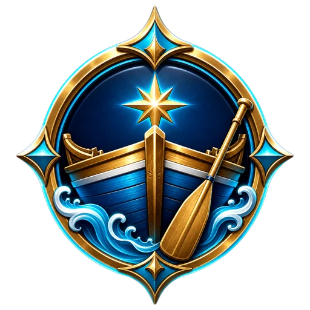
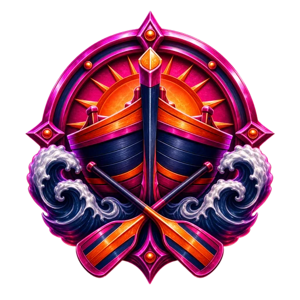

Glisse pour diriger · Shift = contre-gîte · les chiffres tirent Liste complète : Échap → Raccourcis clavier
40E TOUR DES YOLES · 26 JUILLET → 2 AOÛT8 ÉTAPES, UN CLASSEMENT GÉNÉRALSainte-Anne → Vauclin → Robert → Trinité → Saint-Pierre → Fort-de-France → Anses d'Arlet → Rivière-Pilote → retour Sainte-Anne. 4/3/2/1 points à la place, zéro si tu chavires.
2,4 kml'étape « montagne » Trinité → Saint-Pierre, la juge de paix
60 Hzsimulation fixe et replay checksum
THREE.JS 0.185.1 · BUILD 1.2 TROPICAL MAYHEM
MANCHE 100:00
PREMIER À 5

J1 · Q/DPRÊT
DUEL LOCAL
J2 · J/LPRÊT

☀ ALIZÉS STABLES
HQ · initialisation
🌪 LA BRUME DE SABLE TE RATTRAPE80 m
CHAVIRÉ
HARPON VERROUILLÉ
VISÉE · CLIC DROIT OU 2E DOIGT · GLISSER · RELÂCHER
OU GLISSE À L'ÉCRAN
0KM/H
ÉQUILIBRESTABLE
TURBO0%
COQUE100%
● ● ● ● ● ●VOILE 82%0 KG
MÂTVOILEBWA
&COCOéHARPON"MINE'RHUM(BARIK-CHADRONèLANBI_PWASON
🎨
MA YOLE
Le gréement change ta course. La livrée ne change rien — elle te distingue.
GRÉEMENT
l'équilibre d'origine
LIVRÉE DE VOILE
JOUEUR CONTRE JOUEUR · ÉCRAN PARTAGÉ DYNAMIQUE
DUEL LOCAL
Deux yoles pilotées sur le même clavier, deux rivaux IA et une caméra qui garde le duel dans le cadre.
PILOTE 1 · CYAN / OR
JOUEUR 1
BARRE
QD
ARME / SOUTE
ESPACEE
TURBO / DASH
ZX
CONTRE-GÎTE
SHIFT
VS2 HUMAINS + 2 RIVAUX IA
PILOTE 2 · MAGENTA / ORANGE
JOUEUR 2
BARRE
JL
ARME / SOUTE
IO
TURBO / DASH
UM
CONTRE-GÎTE
K
Les replays restent réservés au mode solo : les deux entrées locales jouent en direct à 60 Hz.
CALE DE PILOTAGEPAUSE
⏸
MER SUSPENDUE
La brume attend. Pas tes rivaux.
PILOTAGE
COURSE
VISIBILITÉ & IMPACT
RENDU
⌨ RACCOURCIS CLAVIER
PILOTER
Barre
QDou←→
Border / choquer
↑↓
Contre-gîte
Shift
Turbo avant
ZouF
Bwa Dash
XouCtrl
Bwa Dash au geste
double-tapQ/D
Rétro
C
TIRER
Coco Boum
&
Harpon
é
Mine Tsunami
"
Rhum
'
Barik
(
Chadron
-
Konk Lambi
è
Pwason Volan
_
Arme active
Espace
Changer d'arme
E
Frappe de Sable
R
VISER & RESTE
Viser
clic droitou2e doigt
Pause
ÉchapouP
Zoom
+-
Performance
F3
DUEL LOCAL · JOUEUR 2
Barre
JL
Contre-gîte
K
Turbo / Dash
UM
Arme / soute
IO
Les huit chiffres tirent directement — pas besoin d'appuyer sur Espace ensuite.
🏆
VICTOIRE
La mer a choisi son patron.
0TAKEDOWNS
0SHIFT PARFAITS
0KM/H MAX
Seed et inputs déterministes sauvegardés localement.
🌐
THREE.JS INTROUVABLE
La librairie 3D n’a pas pu être chargée.
↻ Tourne le téléphone en paysage pour le combat total.